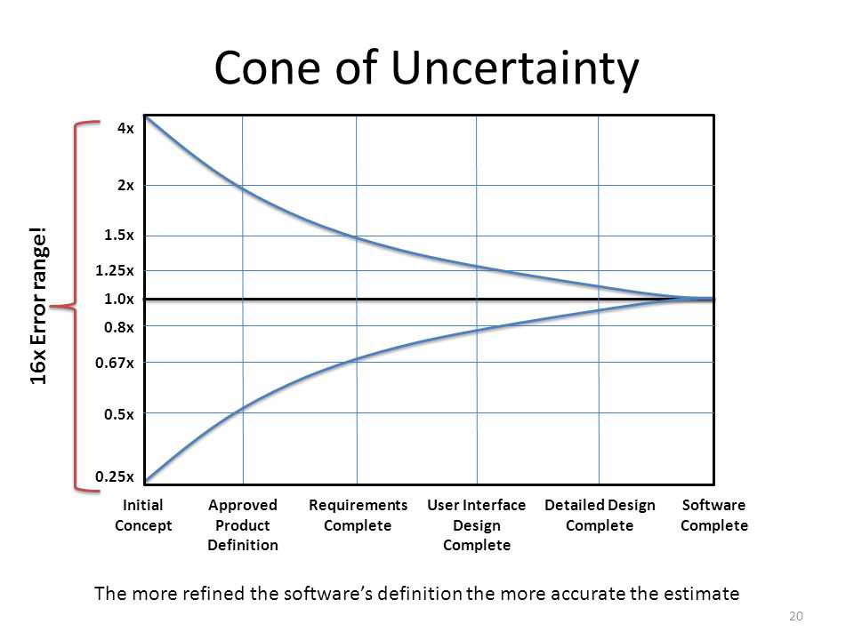
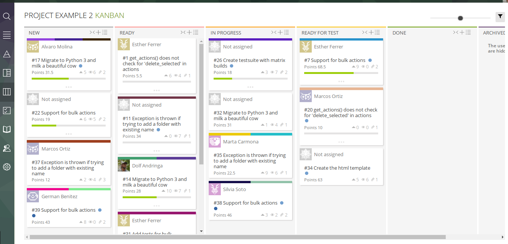
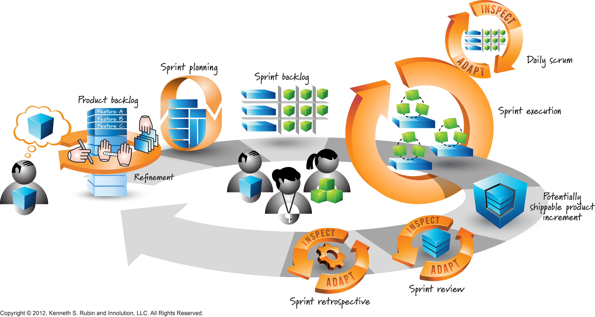
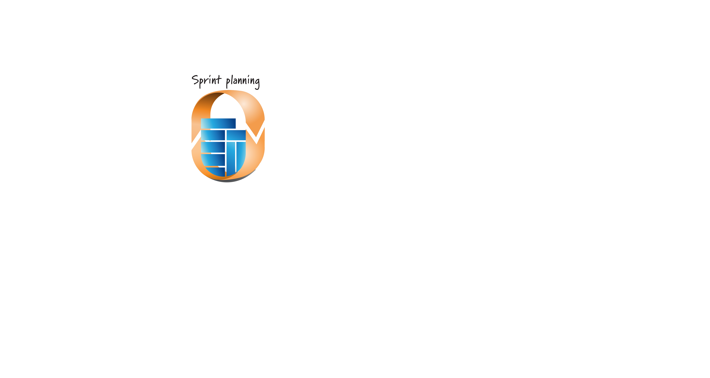
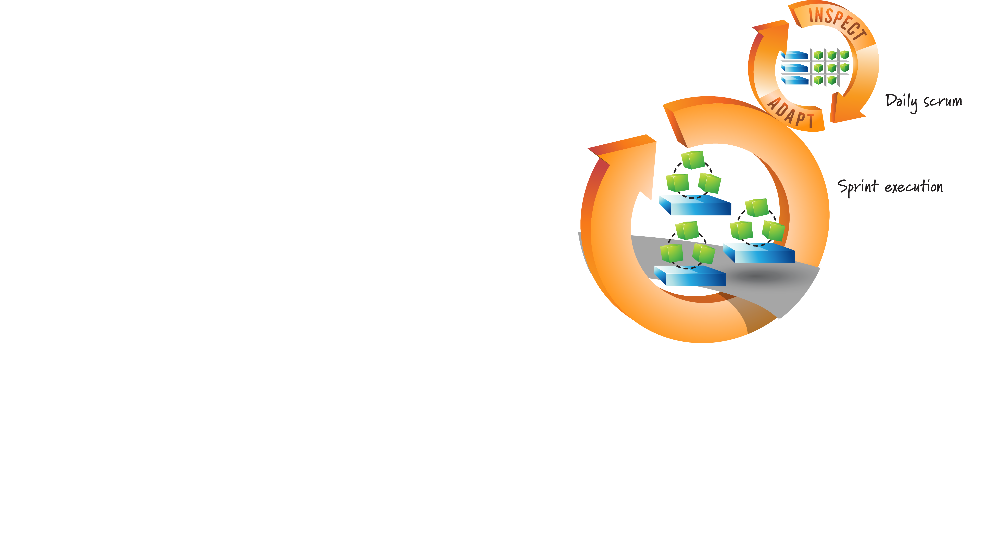

Scrum
3 Days
Day 1
OverviewDay 2
Workflow, roles and some practiceDay 3
Practice full workflowToday
- Problems
- Pillars of scrum
- Overview of scrum
What problems do you encounter now?
Are your projects delivered on time?
Do you feel customers are happy with the end result?
Is your team proud of the project results?
Do you have to work overtime often for projects?
Are there frustrations within the team because the customer changed their minds or a project turned out to be more complicated?
Waterfall

Gantt charts

Cone of uncertainty
Drawbacks
A lot of time spent on planning
Users need to see what they don't want before they know what they do want.
We're shooting at a moving target
Agile
Scrum
Kanban
Iterative
Pillars
Transparency
Introspection
Adaptation
Manifesto
Invidividuals and interactions over tools and processes
Working software over comprehensive documentation
Customer collaboration over contract negotiation
Responding to change over following a plan

Scrum
- Complete project management workflow
- More impact to implement
- Potentially larger rewards
Kanban
- Simpler
- Easier to integrate
- Smaller rewards




Backlog

Epics
- Large/general "features"
- Vague
User Stories/Tasks
- Adds value
- Only concerns "What" not "How"
- Independent
- Small
- Testable
- Estimatable




Planning in short cycles
Continuous evaluation
Commitment of everyone throughout project
Links
- This presentation: http://allican.be/scrum-presentation/
- Number of good short movies on scrum: http://www.collab.net/services/training/agile_e-learning
- Scrum overview PDF: https://www.scrumalliance.org/scrum/media/ScrumAllianceMedia/Files%20and%20PDFs/Agile%20Resources/S_OverviewofScrumFrame_1.pdf
- How to implement scrum in 10 easy steps: http://www.allaboutagile.com/how-to-implement-scrum-in-10-easy-steps/
- Cost estimation in Agile projects: https://www.toptal.com/agile/software-costs-estimation-in-agile-project-management
- Measuring project performance in agile projects: https://www.atlassian.com/agile/metrics
- Scrum vs Kanban: http://www.agileweboperations.com/scrum-vs-kanban